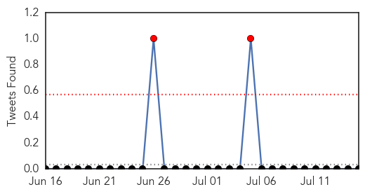
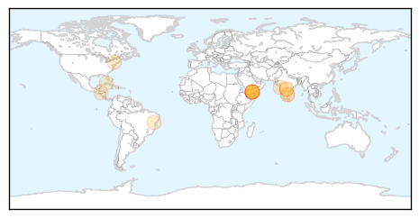

Toggle navigation
Early Warning
Daily Alerts
Dengue Fever
Jul 15, 2015
Compare to:
-
Hemmorhagic Fever
Mold/Fungal Infection
Influenza
Meningitis
Pertussis / Whooping Cough
Middle East Respiratory Syndrome
Cholera
Hepatitis
Chikungunya
Yellow Fever
Bubonic Plague
West Nile Virus
Swine Flu
Ebola
Measles
Unknown
Mumps
30 Day Trends
Web: 6
alerts
, 4
warnings
Twitter: 2
alerts
, 0
warnings
Top Articles:
0.964
Piled-up garbage set to trigger health crisis
0.955
117 dengue cases in Chittoor creates panic
0.910
Health situation critical in Yemen’s Aden: WHO
0.883
WHO warns of a ‘critical’ health situation in Aden
0.798
Yemen UN agencies deliver life-saving medicines and domestic supplies amid ongoing fighting
0.761
Yemen: UN agencies deliver life-saving medicines and domestic supplies
0.621
BMC wakes up, changes misleading signboards
0.606
Technology Fights Dengue Fever – Curitiba In English
0.599
Disclosure of association: health and changing climate
0.573
A new ward for children suffering from dengue and chikungunya
0.513
HIV Under Castro
Top Tweets:
No tweets found for Jul 15, 2015
Web/News Articles
Tweets

Article Locations

Article Confidences